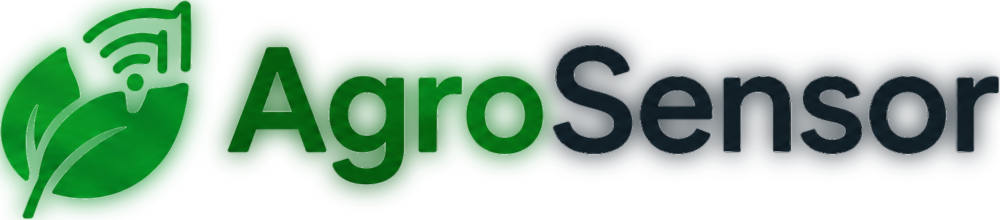

Monitoramento Inteligente para Agricultura Familiar
Tecnologia e dados trabalhando juntos para mais produtividade e sustentabilidade no campo.

Versão 1.0.0

Tecnologia e dados trabalhando juntos para mais produtividade e sustentabilidade no campo.
Versão 1.0.0
O AgroSensor é uma plataforma de monitoramento inteligente criada para levar tecnologia acessível à agricultura familiar. Com sensores conectados, você acompanha em tempo real as condições das suas plantações direto do celular ou computador.
Monitoramento em tempo real
Temperatura, umidade do solo e do ar, e luminosidade, sempre atualizados.
Alertas inteligentes
Avisos automáticos quando algo sair da faixa ideal para a sua cultura.
Histórico e relatórios
Acompanhe a evolução das suas plantações e exporte os dados quando quiser.
Feito para o pequeno produtor
Interface simples e acessível, sem complicação técnica.